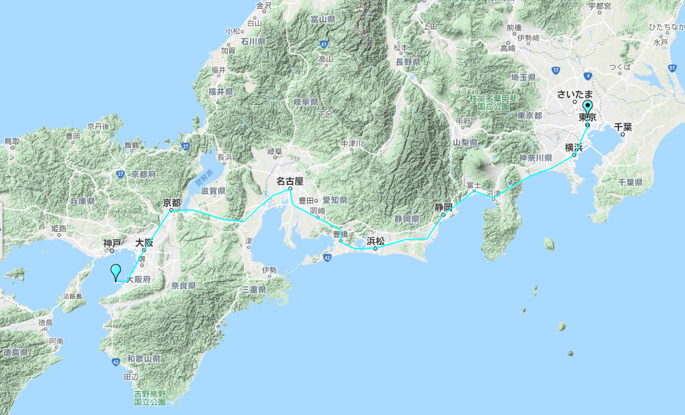

| | | | | |
| - | - | - | - | - |
|<b>中文名称</b>|日本国||<b>GDP总计</b>|4.971万亿美元（2018年，国际汇率）|
|<b>英文名称</b>|Japan||<b>人均GDP</b>|39287美元（2018年，国际汇率）|
|<b>简称</b>|日本||<b>国际电话区号</b>|81|
|<b>所属洲</b>|亚洲||<b>国际域名缩写</b>|.jp|
|<b>首都</b>|东京||<b>道路通行</b>|靠左驾驶|
|<b>主要城市</b>|大阪，横滨，名古屋，神户，福冈，京都，札幌，仙台，广岛等||<b>国家象征</b>|天皇德仁|
|<b>国庆日</b>|12月23日||<b>人类发展指数</b>|0.915（2018年）|
|<b>国歌</b>|《君之代》||<b>法律体系</b>|欧陆法系|
|<b>国家代码</b>|JPN||<b>中央银行</b>|日本银行|
|<b>官方语言</b>|日语||<b>地理最高点</b>|富士山（3775.63米）|
|<b>货币</b>|日元（円、￥、JPY、yen）||<b>著名企业</b>|丰田、本田、索尼、三菱、东芝等|
|<b>时区</b>|UTC+9||<b>主要学府</b>|东京大学、京都大学等七所旧帝国大学，早稻田大学等私立大学|
|<b>政治体制</b>|议会制君主立宪制||<b>气 候</b>|温带海洋性季风气候|
|<b>国家领袖</b>|天皇：德仁、首相：安倍晋三||<b>历史人物</b>|织田信长、丰臣秀吉、德川家康等|
|<b>人口数量</b>|124776364人（2019年）||<b>民族象征</b>|太阳、天照大神、樱花等|
|<b>人口密度</b>|347.8人/平方公里||<b>著名人物</b>|山口百惠、高仓健、宇津井健等|
|<b>主要民族</b>|大和族、琉球族、阿伊努族||<b>著名景点</b>|银座、京都、富士山、平城京|
|<b>主要宗教</b>|神道教、佛教||<b>年 号</b>|令和（2019年5月1日启用）|
|<b>国土面积</b>|377972.28平方公里||<b>国 旗</b>|日章旗|
|<b>水域率</b>|0.8%||||
| <b>骑行日记</b> |
| - |
| <a href="javascript:;" onclick="day(this);">Day 1</a> |
| <a href="javascript:;" onclick="day(this);">Day 2</a> |
| <a href="javascript:;" onclick="day(this);">Day 3</a> |
| <a href="javascript:;" onclick="day(this);">Day 4</a> |
| <a href="javascript:;" onclick="day(this);">Day 5</a> |
| <a href="javascript:;" onclick="day(this);">Day 6</a> |
| <a href="javascript:;" onclick="day(this);">Day 7</a> |
| <a href="javascript:;" onclick="day(this);">Day 8</a> |
| <a href="javascript:;" onclick="day(this);">Day 9</a> |